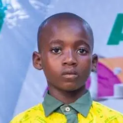
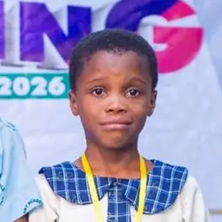

Olatunji Treasure
Ivory Schools, Akingbile
2026 results
After three rounds of elimination, three young spellers stood above the rest of the field.
Ivory Schools, Akingbile

Afoy Academy, Igbo-Oloyin

Eduville School, Sagbe
Photographed on stage at Funduk Hall right after results were announced. Besides the cash prizes, judges gave individual gifts to all three finalists, and every pupil in attendance, participant or not, went home with a customised bag.
Afoy Academy’s registration changed hands more than once in the run-up to the event. The contestant register reflects the final official list, which differs slightly from who ultimately competed on the day.
The panel
A panel of five to seven judges scored every round, with correctness confirmed collectively and a Chief Judge settling any disagreement.
Chief Judge · Career Counsellor, Valentia Schools
Educator & Writer
Pathfinder College
Oyo State Ministry of Education
“A display of courage and enthusiasm. See yourselves as winners, always.”Counsellor Grace Kayode, Chief Judge